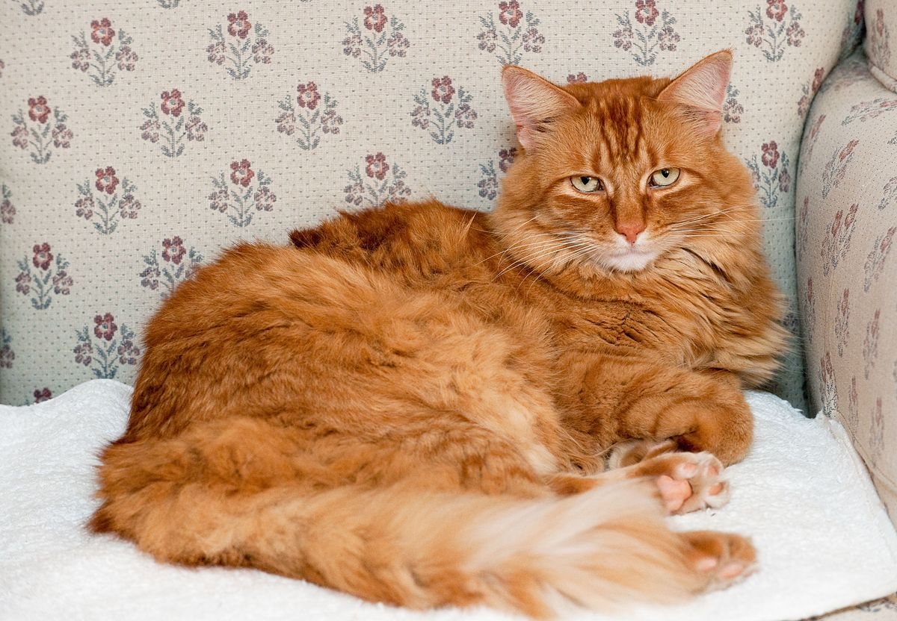

Bum (Mèo)
- Trung tâm: SAR
- Địa chỉ: 25 Lê Văn Việt

- Thông tin tổng quan:
+ Loại: Mèo
+ Tuổi: 1
+ Giới tính: Đực
+ Giống: Nga
+ Cân nặng: 4 kg
-Tình trạng hiện tại: Đã tiêm phòng, tiệt giun, được thiến